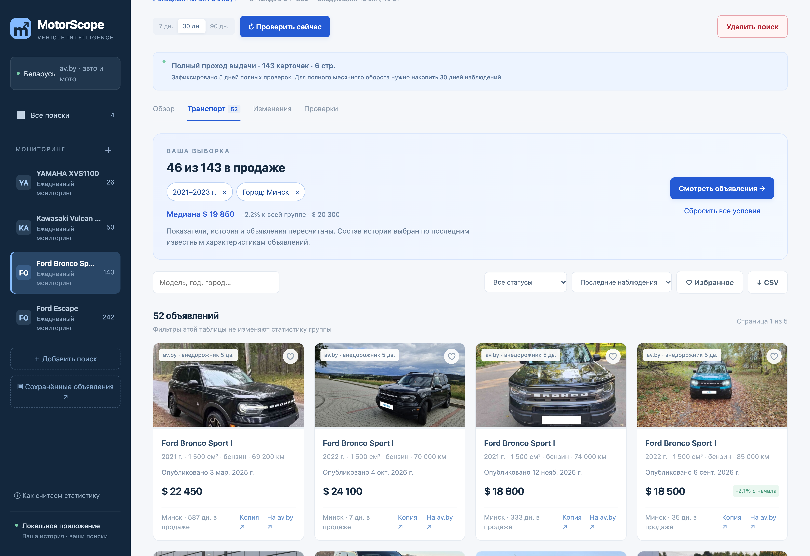
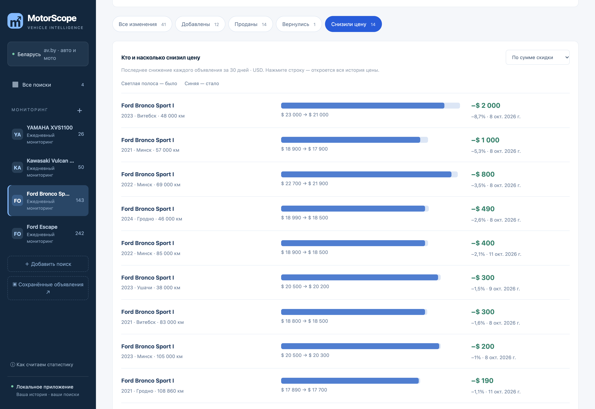
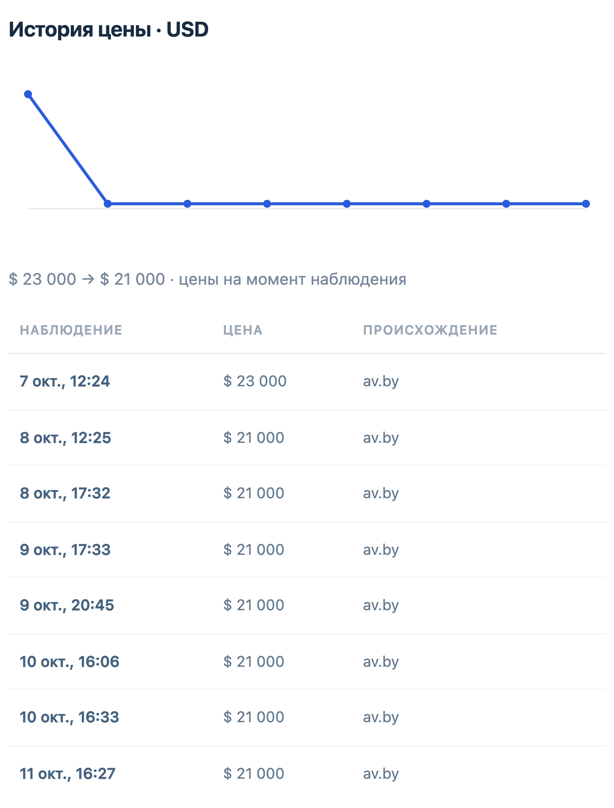

MOTORSCOPE / МОНИТОРИНГ И АНАЛИТИКА АВТОРЫНКА
Мониторинг рынка автомобилей и мотоциклов
MotorScope отслеживает объявления на av.by по выбранным пользователем параметрам. Приложение сохраняет историю цен, отмечает новые предложения и снижения стоимости, а интерактивные графики помогают сравнивать варианты по годам, пробегу и городу.
Рабочее приложение · Реальные данные av.by

01 / ЗАДАЧА
Следить за нужными моделями, а не проверять выдачу заново
При поиске автомобиля или мотоцикла одного списка объявлений недостаточно. Важно понимать, какие варианты появились, где снизилась цена и как предложение меняется со временем. Задача — автоматизировать повторные проверки выбранных групп и собрать их историю в одном инструменте, чтобы не вести таблицы вручную и не сравнивать объявления по памяти.
02 / РЕШЕНИЕ
Что делает приложение
От общей статистики — к подходящим вариантам
Графики связаны с объявлениями: выбранные условия применяются вместе. Можно сравнить конкретный сегмент со всей группой и сразу перейти к его предложениям — без повторного сбора данных.


03 / ИНЖЕНЕРИЯ
Ключевые решения при разработке
04 / РЕЗУЛЬТАТ
История рынка вместо повторного просмотра объявлений
MotorScope собирает изменения в одном месте: пользователь видит новые варианты и снижения цен, сравнивает подходящие предложения и возвращается к сохранённым объявлениям. На момент подготовки кейса четыре поиска содержали 461 активное объявление. В сравнительном прогоне одной группы из 26 мотоциклов сбор данных сократился с 47,6 до 4,4 секунды при совпадении карточек и их характеристик. Замер не включает скачивание фотографий.


Проверка работоспособности
В последнем зафиксированном прогоне пройдены 104 серверных теста. Ранее проверены 30 браузерных сценариев на изолированных тестовых данных. Для этого кейса дополнительно проверены работающий интерфейс, совместный выбор годов и города, переход к объявлениям и история цены. Скриншоты сняты с реальных данных приложения.
05 / ТЕХНОЛОГИИ